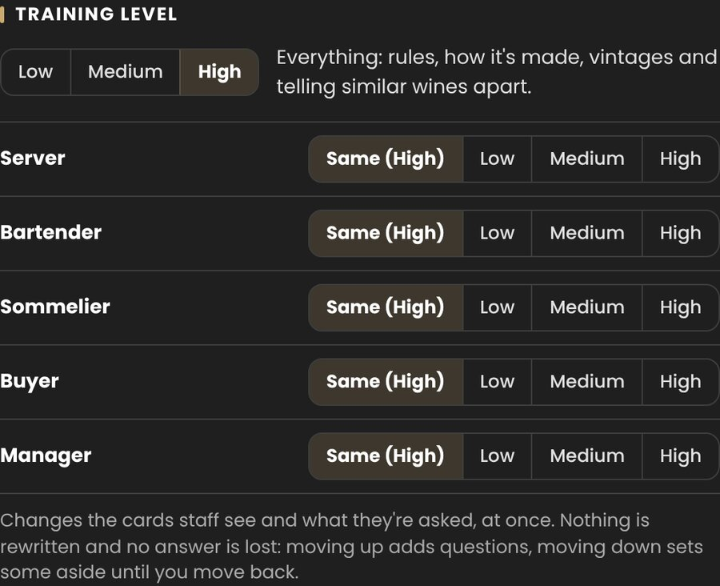

Restaurants and wine bars
You chose every wine. Your floor should know why.
Vinterest Teams trains each person on your list and your menu, to the standard their role needs, and tells you who's there before the doors open.

Vinterest Teams trains each person on your list and your menu, to the standard their role needs, and tells you who's there before the doors open.
A bartender needs the glass list cold; a sommelier needs all of it. These minimums are where we start, and you move them. Allergens are 100% for everyone.
One honest line about every wine poured by the glass, and the dish it suits. Five questions before a shift keeps it there.
Every glass by heart, most of the bottles, and what to pour with each dish, so the answer is there before the guest asks.
The whole list, and why this Meursault rather than that Chablis. Your sommelier sets the standard; the team is tested against it.
Set Low, Medium or High for the restaurant, and a different level for any role. It changes what staff see and what they're asked, at once.
Nothing is rewritten and no answer is lost when you move a level.

Photograph the new page, or one new bottle. Vinny says what's new, what's gone and what changed, and nothing reaches your staff until you approve it.

Bring in a sales export from your POS and Sales Insights tells you what matters in plain sentences: the best seller and whether its sellers know it, wine per guest, the slow glasses, and how many of your team could talk about each one tonight.

Answers fade, wines arrive, someone skips the drill for a fortnight. The console shows each person what they're short of and how many days behind they are, so the five minutes before service go where they count.